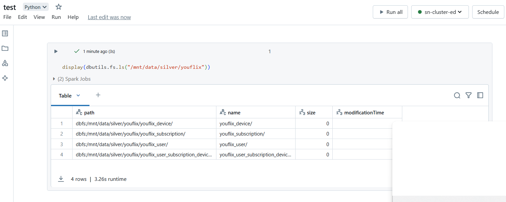
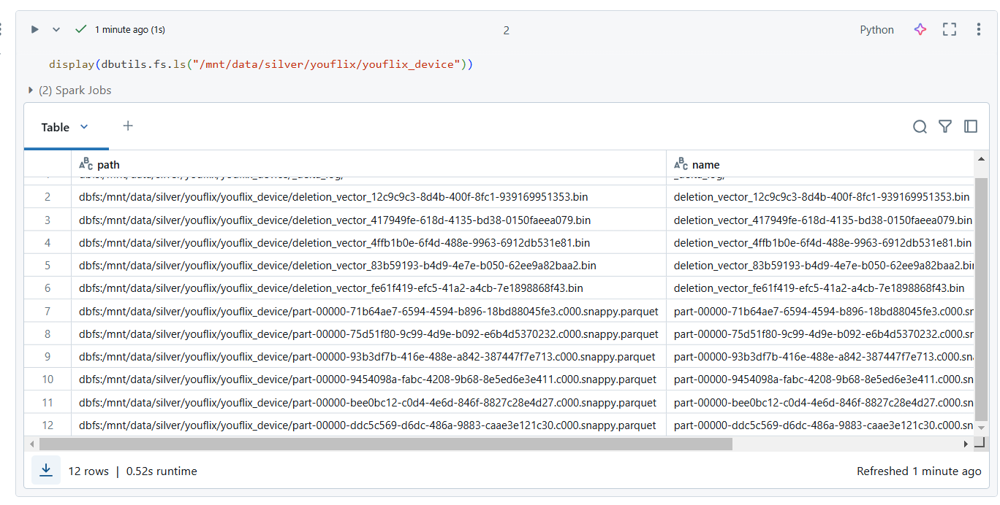
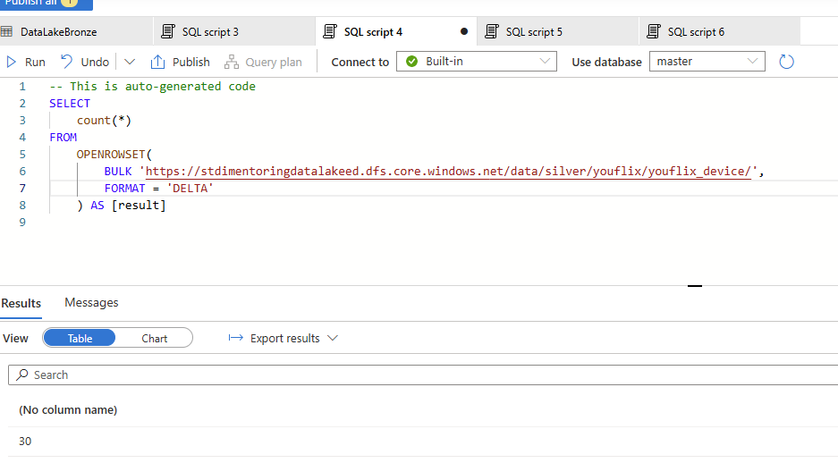
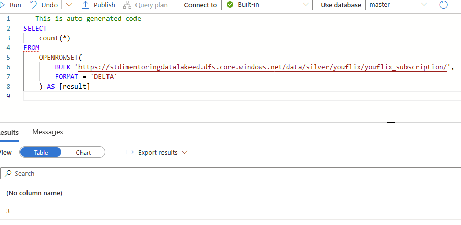
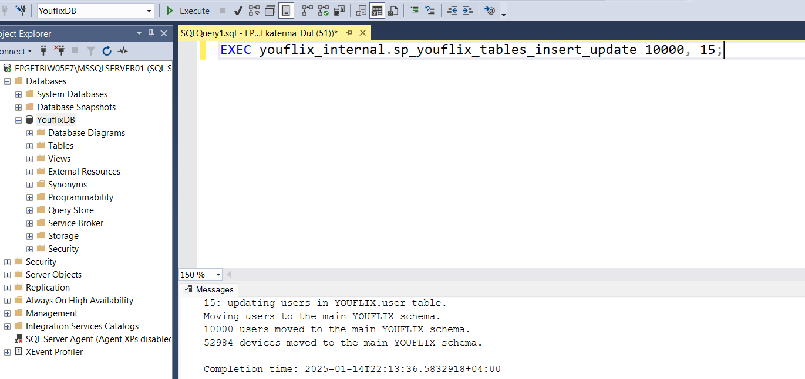

Task 1.2 Databricks YouFlix DB Silver
Run Scenario:
- Before starting the run scenario, clear
bronze/youflix and silver/youflix directories.
- Delete and re-create YouFlixDB database from scratch using
DeploymentScript.sql script. It is necessary to
get rid of the results of your previous execution and testing activities.
- Drop
YouFlix database from your Databricks workspace.
- Go to data lake
stdimentoringdatalakexx and proceed to Storage browser, then click on Tables and edit
each of entity by setting watermark value to 2000-01-01T00:00:00.00Z.
- Run pipeline from task 1.1.
-
Run the notebook uc1_load_bronze_to_silver.ipynb.
-
Create new notebook test in Azure Databricks.
-
Run display(dbutils.fs.ls("/mnt/data/silver/youflix")) in “test” notebook and take screenshot(s) of the
results.

-
Run display(dbutils.fs.ls("/mnt/data/silver/youflix/youflix_device")) in “test” notebook and take
screenshot(s) of the results.

-
Run display(dbutils.fs.ls("/mnt/data/silver/youflix/youflix_subscription")) in “test” notebook and take
screenshot(s) of the results.

-
Run display(dbutils.fs.ls("/mnt/data/silver/youflix/youflix_user")) in “test” notebook and take screenshot(s)
of the results.
-
Run display(dbutils.fs.ls("/mnt/data/silver/youflix/youflix_user_subscription_device")) in “test” notebook
and take screenshot(s) of the results.

-
In Synapse Workspace, navigate to Data section, find in Linked tab your container, open silver/youflix and
check number of rows for each delta table using SQL query.
-
Take screenshot(s) of SQL queries in with count values.



-
Connect to MS SQL Server YouFlixDB database and run the following command:
sql
EXEC youflix_internal.sp_youflix_tables_insert_update 10000, 15;

-
Run pipeline from task 1.1.
- Run the notebook
uc1_load_bronze_to_silver.ipynb.
- In Synapse Workspace, navigate to Data section, find in Linked tab your container, open “bronze/youflix”
and check number of rows for each newly loaded file using SQL query.
- Take screenshot(s) of SQL queries with count values.

Full Notebook:
```python
Authenticate Databricks to access Data Lake
value must be updated with Azure Key Vault-backed secret scope name
must be updated with Azure Key Vault value for application id
must be updated with Azure Key Vault value for tenant id
must be updated with Azure Key Vault value for client secret
AppID = dbutils.secrets.get(scope="secret-scope-ed", key="applicationID>")
TenantID = dbutils.secrets.get(scope="secret-scope-ed", key="tenantID")
ClientSecret = dbutils.secrets.get(scope="secret-scope-ed", key="clientSecret")
configs = {"fs.azure.account.auth.type": "OAuth",
"fs.azure.account.oauth.provider.type": "org.apache.hadoop.fs.azurebfs.oauth2.ClientCredsTokenProvider",
"fs.azure.account.oauth2.client.id": AppID,
"fs.azure.account.oauth2.client.secret": ClientSecret,
"fs.azure.account.oauth2.client.endpoint": "https://login.microsoftonline.com/{tenant}/oauth2/token".format(
tenant=TenantID)}
Mounting data in an Azure storage account using an Azure Active Directory (Azure AD) application service principal for authentication
dbutils.fs.unmount("/mnt/data") #use to unmount data if needed
must be replaced with your Azure Data Lake Storage Gen2 name
try:
dbutils.fs.mount(
source="abfss://data@stdimentoringdatalakeed.dfs.core.windows.net/",
mount_point="/mnt/data",
extra_configs=configs)
except Exception as e:
if "Directory already mounted" in str(e):
pass # Ignore error if already mounted.
else:
raise e
```
python
dbutils.fs.mounts()
[MountInfo(mountPoint='/databricks-datasets', source='databricks-datasets', encryptionType=''),
MountInfo(mountPoint='/Volumes', source='UnityCatalogVolumes', encryptionType=''),
MountInfo(mountPoint='/databricks/mlflow-tracking', source='databricks/mlflow-tracking', encryptionType=''),
MountInfo(mountPoint='/databricks-results', source='databricks-results', encryptionType=''),
MountInfo(mountPoint='/databricks/mlflow-registry', source='databricks/mlflow-registry', encryptionType=''),
MountInfo(mountPoint='/Volume', source='DbfsReserved', encryptionType=''),
MountInfo(mountPoint='/volumes', source='DbfsReserved', encryptionType=''),
MountInfo(mountPoint='/mnt/data', source='wasbs://data@stdimentoringdatalakeed.blob.core.windows.net/', encryptionType=''),
MountInfo(mountPoint='/', source='DatabricksRoot', encryptionType=''),
MountInfo(mountPoint='/volume', source='DbfsReserved', encryptionType='')]
```python
%sql
-- Creating
database and delta
tables if not exist
CREATE
DATABASE
IF
NOT
EXISTS
YouFlix;
CREATE
TABLE
IF
NOT
EXISTS
YouFlix.youflix_user_delta(
user_id
BIGINT,
user_name
STRING,
user_email
STRING,
first_name
STRING,
last_name
STRING,
user_date_of_birth
DATE,
user_address
STRING,
user_phone
STRING,
created_timestamp
TIMESTAMP,
expiration_timestamp
TIMESTAMP,
modified_timestamp
TIMESTAMP
)
USING
DELTA
LOCATION
'/mnt/data/silver/youflix/youflix_user';
CREATE
TABLE
IF
NOT
EXISTS
YouFlix.youflix_device_delta(
device_id
BIGINT,
device_name
STRING,
device_type
STRING,
device_os
STRING,
created_timestamp
TIMESTAMP
)
USING
DELTA
LOCATION
'/mnt/data/silver/youflix/youflix_device';
CREATE
TABLE
IF
NOT
EXISTS
YouFlix.youflix_subscription_delta(
subscription_id
BIGINT,
subscription_name
STRING,
subscription_type
STRING,
subscription_video_quality
STRING,
subscription_max_devices
INT,
created_timestamp
TIMESTAMP,
expiration_timestamp
TIMESTAMP
)
USING
DELTA
LOCATION
'/mnt/data/silver/youflix/youflix_subscription';
CREATE
TABLE
IF
NOT
EXISTS
YouFlix.youflix_user_subscription_device_delta(
user_subscription_device_id
BIGINT,
user_id
BIGINT,
device_id
BIGINT,
created_timestamp
TIMESTAMP
)
USING
DELTA
LOCATION
'/mnt/data/silver/youflix/youflix_user_subscription_device';
```
```python
import re
from delta.tables import *
from pyspark.sql.functions import *
from pyspark.sql import Window
dictionary "entities" store the name of the entities and it's BK
entities = {"device": "device_id",
"subscription": "subscription_id",
"user": "user_id",
"user_subscription_device": "user_subscription_device_id"}
try:
# looping through every entity
for entity in entities.items():
bronzePath = "/mnt/data/bronze/youflix/youflix_{entity_name}".format(entity_name=entity[0])
silverPath = "/mnt/data/silver/youflix/youflix_{entity_name}".format(entity_name=entity[0])
processedPath = "/mnt/data/bronze/youflix/processed/youflix_{entity_name}".format(entity_name=entity[0])
# files to load from bronze to silver
filePaths = dbutils.fs.ls(bronzePath)
if filePaths:
# MERGE BRONZE TO SILVER
# TODO
# use pyspark spark.read.load method to create dataframe based on csv files in the bronzePath
# do not forget that file has header
bronzeDF = spark.read.option("header", "true").option("inferSchema", "true").csv(bronzePath)
partition = Window.partitionBy(entity[1]).orderBy(col("filedate").desc())
bronzeDF_cln = (bronzeDF.withColumn("filedate",
to_timestamp(regexp_extract(input_file_name(), '([\d]{14})', 0),
'yyyyMMddhhmmss'))
.withColumn("rn", row_number().over(partition))
.filter("rn == 1")
)
# get delta table at the silver path
silver_table = DeltaTable.forPath(spark, silverPath)
# TODO
# add your code into brackets below
# use pyspark merge method to merge bronzeDF_cln dataframe into silver_table by BK. BK for table can be accessible by entity[1]
# refer to the https://learn.microsoft.com/en-us/azure/databricks/delta/merge to learn about upsert into a Delta Lake table using merge.
# this article https://docs.delta.io/latest/delta-update.html#table-deletes-updates-and-merges&language-python will help to understand how to delete, update and merge Delta tables
(
silver_table.alias('silver')
.merge(
bronzeDF_cln.alias('updates'),
f'silver.{entity[1]} = updates.{entity[1]}'
)
.whenMatchedUpdate(
set=
{
col: f"updates.{col}" for col in bronzeDF.columns
}
)
.whenNotMatchedInsert(values=
{
col: f"updates.{col}" for col in bronzeDF.columns
}
)
.execute()
)
# MOVE TO PROCESSED DIRECTORY
# looping through every file in directory
for file_info in filePaths:
# creating tuple to store (year, month, day) of the file
file_date = (re.split("_", file_info.name)[-1][0:4], re.split("_", file_info.name)[-1][4:6],
re.split("_", file_info.name)[-1][6:8])
# TODO
# complete mv command to move files from bronzePath to processedPath according to the structure in 1.2.7.
# use file_date tuple to get year, month and day of the file, use file_info.name to get name of file
dbutils.fs.mv(file_info.path, processedPath + "/" + file_date[0] + "/" + file_date[1] + "/" + file_date[
2] + "/" + file_info.name)
# REMOVE Success.csv
# TODO
dbutils.fs.rm(f"/mnt/data/bronze/youflix/Success_{entity[0]}.txt")
else:
print("Entity \"{entity}\" - No files for load".format(entity=entity[0]))
except Exception as e:
print(e)
```